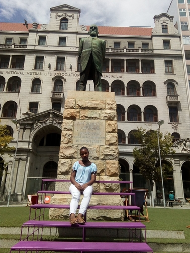
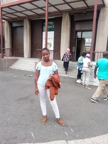
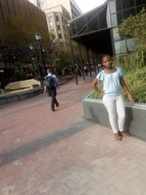

Church Square

Church Square is a multi-layered space in the heart of Cape Town, with a long and complex history. This area of the city is particularly rich in slave history. On one side stands The Groote Kerk, which gives the square its name. Hundreds of years ago, slaves would wait on the square for their Masters as they attended services at the Groote Kerk. It also includes the Slave Lodge, where thousands of slaves were housed, doubling up, for a time, as one of the Cape’s most well-known brothels. It is a place laden with painful memory, but it is also a place with exciting potential as a lively and engaging public space, one which honours and respects this shared history.
Parliament of RSA

It consisted of the House of Assembly and the Legislative Council. In 1910, the Union of South Africa was established, unifing the Cape Colony, the Natal Colony, the Transvaal Colony and the Orange River Colony. With the unification of South Africa came the establishment of a new parliament, the Parliament of South Africa.In 1961, the Republic of South Africa was established, severing its ties with the United Kingdom. A few significant changes were made later: Coloured representation was ended in 1968, leaving both the Senate and the House of Assembly representing white voters only; the Senate was abolished in 1981, changing Parliament to a unicameral legislature; and South West Africa ceased being represented in Parliament from 1977.
St Georges Mall

In 1830,the foundation stone was laid for the St George’s Church at the top of Berg Street was switched to St George’s Street.
Berg Street had been one of the first streets of the Cape settlement linking the seafront and the gardens.
Houses were built on the street from as early as 1693.
The street gained a reputation as the most desirable residential road for the settlement’s burghers until the early nineteenth century, when it developed into a financial and commercial street.